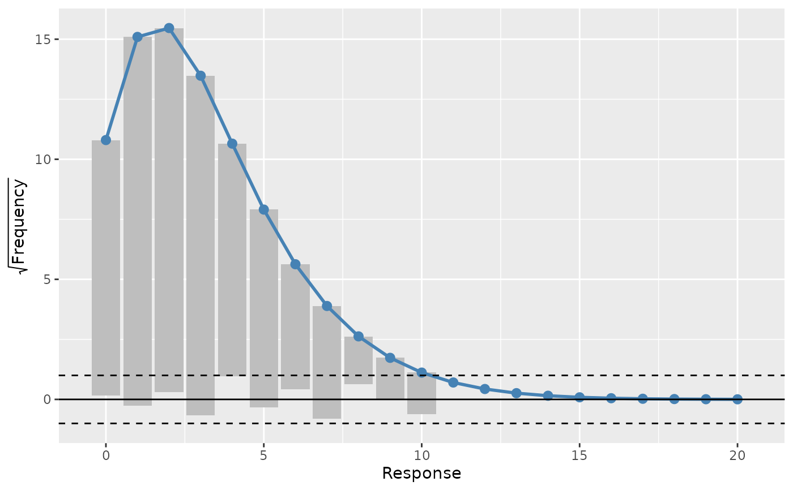

A rootogram is a model diagnostic tool that assesses the goodness of fit of
a statistical model. The observed values of the response are compared with
those expected from the fitted model. For discrete, count responses, the
frequency of each count (0, 1, 2, etc) in the observed data and expected
from the conditional distribution of the response implied by the model are
compared. For continuous variables, the observed and expected frequencies
are obtained by grouping the data into bins. The rootogram is drawn using
ggplot2::ggplot() graphics. The design closely follows Kleiber & Zeileis
(2016).
Usage
rootogram(object, ...)
# S3 method for class 'gam'
rootogram(object, max_count = NULL, breaks = "Sturges", ...)Arguments
- object
an R object
- ...
arguments passed to other methods
- max_count
integer; the largest count to consider
- breaks
for continuous responses, how to group the response. Can be anything that is acceptable as the
breaksargument ofgraphics::hist.default()
References
Kleiber, C., Zeileis, A., (2016) Visualizing Count Data Regressions Using Rootograms. Am. Stat. 70, 296–303. doi:10.1080/00031305.2016.1173590
Examples
load_mgcv()
df <- data_sim("eg1", n = 1000, dist = "poisson", scale = 0.1, seed = 6)
# A poisson example
m <- gam(y ~ s(x0, bs = "cr") + s(x1, bs = "cr") + s(x2, bs = "cr") +
s(x3, bs = "cr"), family = poisson(), data = df, method = "REML")
rg <- rootogram(m)
rg
#> # A tibble: 21 x 3
#> .bin .observed .fitted
#> <dbl> <int> <dbl>
#> 1 0 113 116.640
#> 2 1 236 227.869
#> 3 2 230 239.168
#> 4 3 200 181.679
#> 5 4 94 113.432
#> 6 5 68 62.4881
#> 7 6 27 31.6795
#> 8 7 22 15.1323
#> 9 8 4 6.88637
#> 10 9 3 2.99628
#> # i 11 more rows
draw(rg) # plot the rootogram

# A Gaussian example
df <- data_sim("eg1", dist = "normal", seed = 2)
m <- gam(y ~ s(x0) + s(x1) + s(x2) + s(x3), data = df, method = "REML")
draw(rootogram(m, breaks = "FD"), type = "suspended")